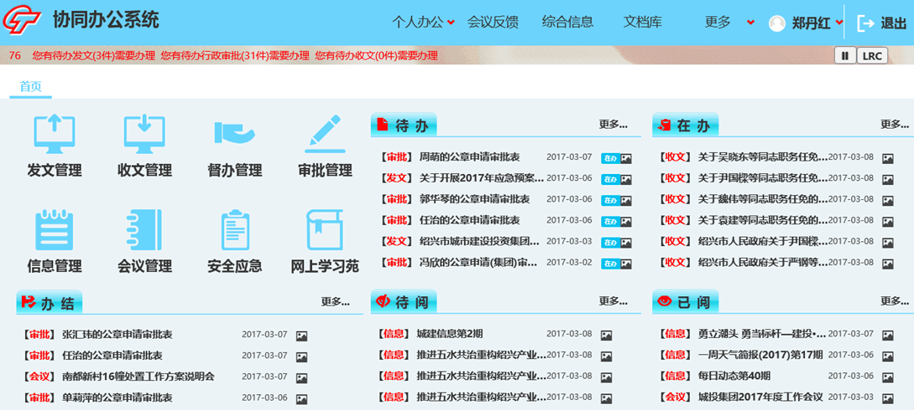

智慧城投信息平台基于绍兴市城投前期项目建设情况及现有管理要求，采用Portal技术，建设并完善了协同办公系统、工程项目管理、决策分析系统，简化企业管理流程，强化企业管理效能，进一步推进企业智能化,实现统一页面展现、统一用户管理、统一授权认证等功能。 基于云架构进行系统总体设计，主要建设内容包含Portal系统、系统功能增补优化、数据云服务平台。
1、Portal系统
基于城投前期项目建设情况及现有管理要求，采用Portal技术，实现单位现有系统的单点登录、资源整合及门户个性化定制等功能的企业内网Portal系统。
2、系统功能增补优化
根据目前单位内部各部门的实际需求，针对现有协同办公系统、决策分析系统进行系统优化。
3、数据云服务平台
采用业内领先技术实现数据云服务平台，为集团各应用系统提供数据支撑服务，为管理人员、设计人员、开发人员、维护人员提供统一管理、开发平台。